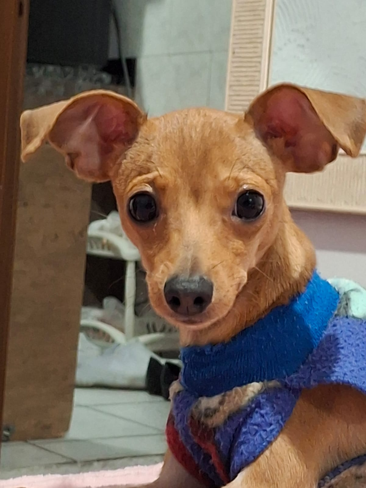

Olá! Este é o Pipoca, meu cachorro favorito.
Ele tem 1 ano e é da raça pinscher.
Pitisco de Carne e frango cozido.
O Pipoca é muito carinhoso e adora brincar de ursinho de pelucia.
Ele também late quando toca a campainha e abraça todo mundo que chega!